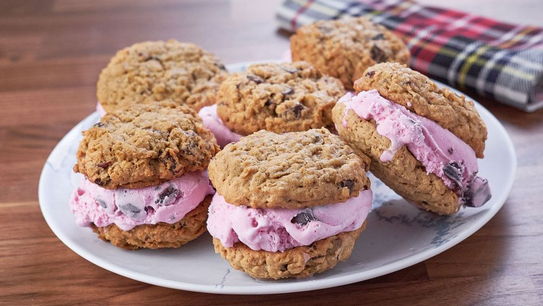

Sándwiches de helado
Mary Berg
24 AGO 2016

- 113 g de mantequilla sin sal, temperatura ambiente
- 200g de azúcar moreno
- 1 huevo a temperatura ambiente
- 1 cucharilla de extracto de vainilla
- 135 g de copos de avena
- 250 g de fresas
- 90 g de harina
- ½ cucharadita de sal
- ¼ de cucharadita de bicarbonato de sodio
- ¼ de cucharadita de levadura en polvo
- ¼ de cucharadita de canela
- 1 pizca de clavo molido
- 1 pizca de nuez moscada recién rallada
- 110 g de cerezas secas picadas
- 110 g de trozos de chocolate negro
- 500 g de helado de cereza
- Tiempo: alto
- Dificultad: bajo
- Comensales: 4
Cómo se hace:
- Caliente el horno a 175º C. Cubra dos bandejas para hornear con papel de horno y reserve.
- Batir la mantequilla y el azúcar en un tazón grande con una batidora de mano hasta que esté suave y esponjoso, aproximadamente 2 minutos. Agrega el huevo seguido de la vainilla; batir hasta mezclar.
- Mezclar la avena, la harina, la sal, el bicarbonato de sodio, el polvo de hornear, la canela, el clavo, la nuez moscada, las cerezas secas y el chocolate negro picado en un tazón grande.
- Agregue estos ingredientes secos a los húmedos y mezcle hasta que se combinen, raspando el tazón según sea necesario.
- Con una cuchara de helado coge porciones de masa y coloque seis galletas en cada bandeja para hornear, dejando 5 cm entre ellas. Hornee hasta que se doren alrededor de los bordes, aproximadamente de 15 a 17 minutos. Enfríe las galletas durante 5 minutos en la bandeja y coloque después en una rejilla para enfriar por completo.
- Una vez que se enfríe, coloque el helado en seis galletas y tape con las otras galletas hasta formar un sándwich. Sirva inmediatamente o envuelva individualmente y guárdelo en el congelador.